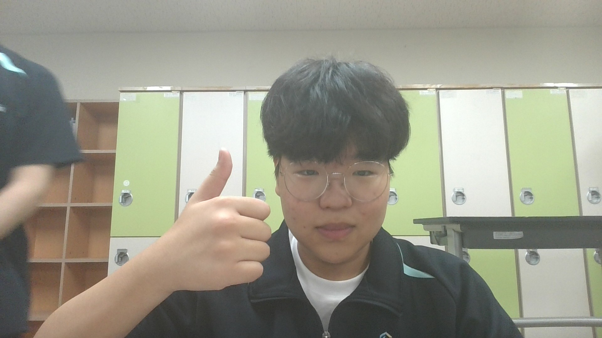

안녕하세요, 저는 꾸준한 열정을 기반으로 계속 발전하고 싶은 프로그래머 OOO 입니다. 저는 지금까지 다양한 웹 기술과 개발 언어에 깊은 관심을 가지고 탐구해 왔습니다. 새로운 지식을 배우고 이를 실제 코드로 구현해내는 과정에서 발생하는 여러 문제를 해결할 때 가장 큰 보람을 느낍니다. 앞으로도 성실한 자세로 저의 역량을 키워나가며 주변 동료들과 함께 협력하여 선한 영향력을 펼칠 수 있는 훌륭한 개발자가 되기 위해 매 순간 최선을 다해 노력하겠습니다.